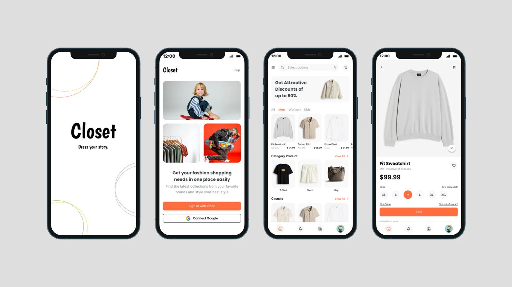

01About the project
This project focuses on revamping a hypothetical clothing e-commerce app called "Closet" to increase online sales. We'll assume Closet has a user base but struggles with conversion rates.
02The problem
Possible reasons for low sales:
- Undifferentiated user experience: Generic product displays and lack of personalization might make Closet forgettable compared to competitors
- Poor product discovery: Difficulty finding desired items due to weak filtering and search options
- Friction in the buying journey: Complex checkout processes or lack of trust signals can deter purchases.
03The goal
Revamping Closet with a focus on :
- Personalized style inspiration: Leverage user data and preferences to recommend outfits and curate collections
- Enhanced product discovery: Allow users to filter and search by various attributes (style, occasion, fabric) and integrate visual search using photos
- Seamless checkout: Streamline the checkout process with guest checkout options and secure payment methods
- Integrate a 3D / AR clothing visualization feature allowing users to see highly realistic models of clothes on a variety of body types.
04Deliverables
- User Research
- Empathy map
- Persona
- Information Architecture
- Wireframe & Visual Design
05The Double Diamond approach
06Empathy map
The empathy map will visualize user needs, frustrations, and behaviors related to online clothing shopping.
07Persona
08Storyboard: how it works
Storyboarding is a visual planning tool that helps predict and refine how users will experience a product. (This focuses on the planning and improvement aspect)
09User flow
User flow creation streamlined my understanding of app navigation and task completion.
10Information architecture
The goal of IA is to create a user experience that is intuitive and efficient. Users shouldn't have to waste time hunting for information – they should be able to find what they need quickly and easily.
11Sketch
I tried sketching using CRAZY 8 method. The goal is to push beyond your first idea, frequently the least innovative, and to generate a wide variety of solutions to your challenge.
12UI style guide
- I have chosen Orange as my primary color, as Orange comes in a wide range of shades and tones, conveys a powerful message of energy, innovation, and approachability. Our vibrant and energetic approach sets us apart, making every experience with us friendly, approachable, and full of enthusiasm.
- I have used Sans-Serif typeface "Poppins" as poppins offers a range of weights (thin, light, regular, medium, semi-bold, bold, extra-bold) and includes italics. This allows you to create a clear hierarchy between headings, subheadings, body text, and buttons.